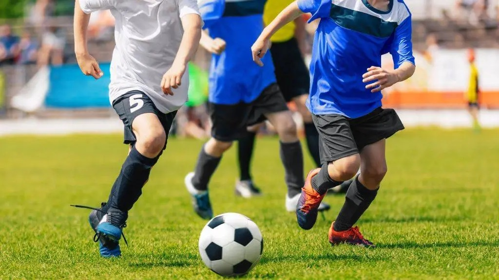

“Sabemos de las múltiples necesidades de los jóvenes cabrerinos, quienes demandan la necesidad de ser escuchados y apoyados, por ello facilitaremos el acceso a recursos, formación y espacios de innovación que fortalezcan sus habilidades emprendedoras y sociales, con un énfasis especial en el fortalecimiento de las instancias de emprendimiento juvenil, además de fomentar fuertemente la participación en el deporte.”